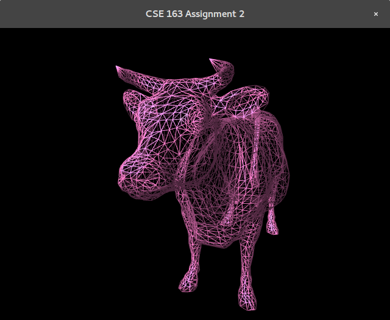
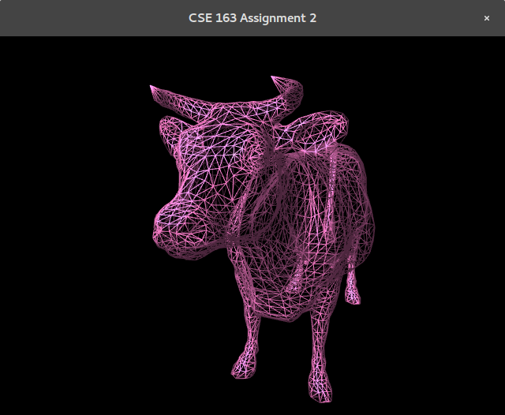

Part 1: Mesh Viewer
Related Class: Mesh, Face, Vertex, Camera
-
Skeleton Code:
The base code of our program is taken from the provided skeleton code in the previous iterations of the CSE 167 class. This code contains the basic initialization process to set up an OpenGL window. We build upon this code by adding a file parser, a Mesh class, and basic shaders. As a result, the program is able to display the model, centered and scaled to a 10x10x10 cube, on a solid black background.
-
Mesh Perception:
In order to test out the normal calculation and the mesh simplification, we need to have a way to "feel" the differences between a coarse mesh model and a fine mesh model. We conquer this obstacle by using Gouraud shading. This shading allows us to see the diffuse and specular highlights, which varies on different faces. It also gives the mesh structure depth and perception under basic lighting. This approach enables us to test out our normal calculations. What's more, to better see the mesh structure, we enable the wireframe modeling in the OpenGL initialization. You can toggle it by pressing 'F5' key to switch between the modes.
 
Toggle between two different mode by pressing 'F5'
-
Interaction With the Model:
To interact with the model, we create a FPS like experience to wander around the scene by using the 'w', 'a', 's', and 'd' keys to move the camera's position and the mouse to rotate the view angle. We do this by first setting up a Camera class to calculate the view matrix according to the camera's position in space and its focus on the scence. We let the Camera class process our keyboard and mouse input and adjust its position and view angle according to these inputs. Then, in the game loop, before drawing, we update our wiew matrix using the Camera class. Also, the camera position is given to the shader for rendering the lighting. In order for you to control the use of the mouse, you can press 'F6' to enable/disable the mouse.
Part 2: Data Structure Design
Related Class: Face, Vertex, Mesh, Errdge
-
Overview:
To implement a good data structure, the mesh manipulation is not the only key we need to deal with. The runtime of an edge collapse and a vertex split, the memory management of faces and vertices, and the proper maintenance of the connectivity structure are also three important concerns. Making the code simple allows it to be maintainable and fast enough to perform the mesh simplification and progressive meshes. The follwing picture is the simplified UML diagram of our data structure relationship.
For the reasons stated above, we decided to use the simple adjacency list data structure. We have three main classes: Vertex, Face, and Mesh. Each of these classes represent what their names suggest (i.e. Vertex represents a vertex). The Mesh class is the container class which holds a list of vertices and faces that make up the mesh, and the connectivity information is stored within the Face and Vertex classes. That is to say, each Face holds a list of Vertex pointers that make up the face, while each Vertex holds a list of the Faces that are adjacent to it. Errdge, on the other hand, is a supplementary class that is only used for storing the information of an edge collapse. This includes the two vertices that make up the edge, the position of new merged vertex, and the error corresponding to the edge collapse. This class facilitates the recalculation of the error whenever a new edge is collapsed, making it a good auxiliary class for containers such as stacks or queues.
UML of data structure
-
Data Import:
To read in the model's data from the OFF files, we mainly use a stringstream class. We first create a Mesh object, which contains an array of Vertex pointers and another array of Face pointers. For each line in the file specifying a vertex, we create a Vertex object on the heap, pass in its x, y, and z coordinates, and add this to the Mesh. Next, for each line in the file specifying a face, we create a Face object on the heap, pass in the Vertex pointers from the Mesh's vertex array using the indices parsed from the file, and add this Face to the Mesh. We then add this Face to the adjacency list of each of its vertices. After parsing (and after every edge collapse or vertex split), we dump all the positions of the vertices and all the indices of the faces' vertices from the Mesh to an array. This array is then passed to the VBO and EBO for OpenGL to render the model.
-
Picking an Edge:
To store the Errdge objects, we use a min heap. Initializing this heap with all the possible edges takes a single O(N log N) time. Picking an edge in each iteration of an edge collapse takes O(log N) time. And finally, adding the new edges (after collapsing edges) will also take O(log N) time.
-
Updating Adjacency List:
Because we deal with pointers and only update locally, with respect to the edge, updating the adjacency list should run in constant time. To update the adjcency list of the faces and vertices that were affected by the edge collapse, we only have to replace the pointer information, which is just a value assignment. The total number of faces and vertices that have to be updated is also constant since they are simply the neighbors of the vertices that were collapsed. As for the faces that collapse as a result of the edge collapse, we toggle a flag in the object that indicates the face being invalid and not part of the simplified model. These show that updating the adjacency list takes constant time.
-
Total:
From the analyses above, performing an edge collapse will take O(log N) time with respect to the number of edges. However, we note that for smaller values, recalculating the error and optimal vertex position might dominate the run time since it uses matrix operations. As for vertex splits, the runtime should be constant since we maintain a history stack that shows which vertices split into which other vertices. This means that there is no calculation required for vertex splits.
-
Memory Management:
In the edge collapse function, instead of deleting, we mark each vertex and face that are not going to be rendered as "dead". These "dead" vertices and faces are then skipped when transferring the vertices and faces into arrays for the VBO and EBO. The reason we did this is because of two things, simplifying the vertex split function and consolidating the dynamic memory. By keeping the "dead' vertices and faces, we avoid having to recreate these objects and instead, simply toggle a flag. Also, by keeping these dynamically allocated objects in a single container, we avoid having to release memory in many different places in the code. Instead, freeing the memory can be done in the end, with a simple for loop.
Run-time Analysis:
Part 3: Mesh Simpification
Related Class: Face, Vertex, Mesh, Errdge
-
Edge Collapsing Algorithm:
In our implementation, the edge collase function takes in a Errdge object. We first retrieve the two vertices to be removed from the Errdge and instantiate a new vertex on the heap by using the new position with the least error, which is already calculated in the Errdge object.
Let the two vertices to be removed be v1, v2 and the new vertex to be v'.
For each face in both v1's and v2's adjacent list, we find the common faces and terminate them. Next, for the remaining faces that were not terminated, we replace v1 or v2 with v' from the face's adjacency list. We then update the normals of these remaining faces to reflect the new vertex. Following that, we iterate through each of the neighbors (vertices in the adjacency list of the faces that are in the adjacency list of the new vetex) and update their adjacency list (remove any terminated faces) and their normals. Lastly, we make new Errdges(Edges with Error) between the new vertex and its neighbors. This includes calculating the error matrics and adding these Errdges into the min heap structure. In the end, we also terminate v1 and v2 in order to not render them.
-
Corner Case (Fins):
The algorithm described above is not enough for some special cases, which can lead to a fins appearing on the surface of the model, making the model appear disasterous and also influencing the error matrics calculation in some areas. See the following picture taken from the assignment write-up.

Our Solution:
We observe from the pictures that the fin is caused by two faces sharing the same vertex set after the edge collapse. This gives us a simple algorithm to detect these fins and remove them accordingly.
Adding on to the edge collapse algorithm above, just after we replace v1 or v2 with v', we check for possible fins. We do this through the use of a nested-for loop that compares each face adjacent to v' with every other face adjacent to v'. For each pair of faces, we add both faces' adjacent vertices into an unordered set. If, after inserting all the vertices from two different active faces into the set, the size of the set still remains as 3, it means that these two faces share the same vertex set (both are fins). Ins this case, we terminate both faces. After checking for fins, we continue with the algorithm above and update the faces and neighboring vertices.
Before Collapsing


Redandunt Faces: Fin

Perfect Solution
- void updatePQ()
- glm::mat4 errorMatrics(Vertex*, Vertex*)
- Errdge optimalEdge(Vertex*, Vertex*)
- void removeEdges(GLuint)
- void collapse(Errdge)
- void updateVFSets()
Part 4: Error Quadric Simplification
Related Functions:
-
Error Quadric Calculation:
To preserve the shape of the mesh when do simplication, we need to find an optimal vertex where an edge collapses to. In order to do so, we need to find a way to calculate the error caused by a collapse of edges and minimize the error during the process of simplification. In this assignment, we record the error based on a point-to-plane error quadric scheme. In a word, we first calculate the planes equation around the edge(vertex v1 and vertex v2). Then, we calculate the distance between the new merged vertex v0(where v1 and v2 converge to due to the edge collapsing) and all the planes around v1 and v2. The sum of the distance will be the error introduced to the mesh simplification. We then calculate the derivative of the error with respect to x, y and z in the space. Making the derivative 0, we can find the minimum error of a new point (x',y',z') where E(x',y',z') = 0. Then, the new point is the idea vertex we want the edge collapses to.
-
Algorithm Overview & Function Explianation:
In our constructor of Mesh, before we dump everything to VBO. We call updatePQ() to calculate all the edges to be collapsed with the optimal point that they converge to using function optimalEdge. The optimalEdge function will take in two vertices and calculate the errorMatrics first using errorMatrics function. Then, we find the optimal position using the calculation process described above. The edge with error and optimal position is packed using Errdge class object and is pushed to priority queue. The priority queue will have all edges with the least error on the top of the queue.
Here, we are ready to do edge collasping. In our removeEdges function, we basically collapse all edges of the mesh until there is nothing left in the priority queue. And store each new vertex into a queue for later splitting(progressive meshing). When we remove one edge, we pop one edge out from priority queue. Check if it's valid(two vertices of the ending is not collapsed before). If valid, we call collapseEdge function on it. Else, keep popping until we find a valid edge to be collapsed on.
Notation: F(V0) : set of faces of v0. (Adjacency list of V0)
Notation: F1(V0): set of faces of v0. (Adjacency list of V0 where it contains the face where ancestor v1 used to have)
Notation: F2(V0): set of faces of v0. (Adjacency list of V0 where it contains the face where ancestor v2 used to have)
In our collapseEdge function, we extract information of two vertices to be merged and the optimal position to be merged. We first create a new vertex on the heap called v0. We set v0's ancestor v1 and v2 to current v1 and v2 pointer. (For part 5, more on this later.) We go over the faces of v1 and v2. Mark faces that contains v1 and v2 dead. And replace v1 in F(V1)'s vertices adjacency list with v0 and replace v2 in F(V2)'s vertices adjacency list with v0. At the same time, add faces from F(V1) and F(V2) to F(V0) and add F(V1) to F1(V0) and F(V2) to F2(V0). Then we do the fin removals. And recalculate the normals of faces near to v0. Recalculate the normals of vertices near to v0 and v0. Then, we calculate new optimal edges(edge with errors and optimal position after converge) and push them to the priority queue for later edge removals.
After removing all edges of the mesh, we call updateVFSets() to store the valid faces and vertercies for later dumpping.
-
Some Notes:
In the following pictures, I present some mesh simplication of different degrees on Armadillo model.
Later on, we will do a progessive meshing and simplication without calculations in part 5, where you can see the animation of the reconstruction from none to whole and the simplification from whole to none.
-
Interaction With the Model:
To interact with the model, we create a FPS like experimence to wonder around the scence using 'w', 'a', 's' and 'd' keys to move the position and the mouse to rotate the view angles. We first set up a Camera class to calculate the view matrix according to the camera object's position in the space and its focus on the scence. We let the Camera class process our input by passing in the glfw window pointer and adjust its position and view angles according to the inputs. Then, in the game loop, before drawing, we update our View matrix using Camra object. As well as, passing, camera position to shader for rendering the light. In order for you to get the mouse out of the program, you can press 'F6' to toggle the mouse from the scene.
Armadillo with Different LOD:

1732 faces with flat shading(try it yourself)


25528 faces

10126 faces

5004 faces


1628 faces